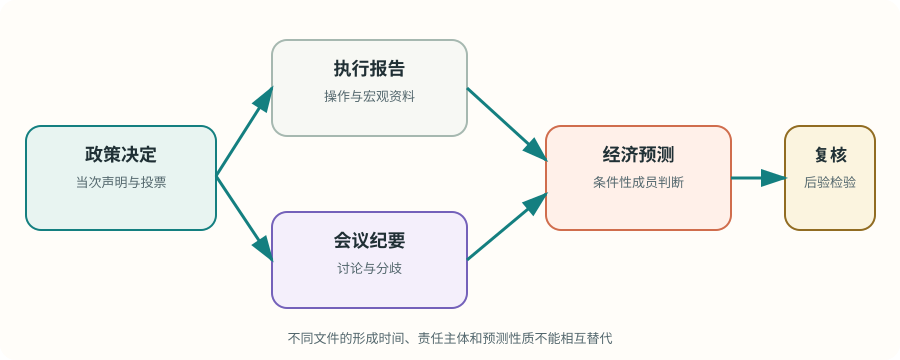

货币银行学 · 第 23 章
如何把央行报告读成可检验的政策判断？
分清央行政策决定、经济预测、报告解读和市场预期，通过来源、时间、指标与反证四个环节阅读人民银行报告、FOMC 声明、会议纪要和点阵图。
央行报告往往有两类内容：一类是已经发生的政策操作和统计事实；另一类是对未来经济的判断、条件性政策意向以及需要关注的风险。读者最容易犯的错误，是把政策措辞当作确定承诺，或者把某段市场行情事后解释成央行“提前暗示”。稳健的阅读方法应当把证据、推断和不确定性分开。
先认识不同央行文件的职责
| 文件 | 主要回答 | 不应据此直接推断 |
|---|---|---|
| 中国人民银行货币政策执行报告 | 已实施操作、宏观与金融形势、政策思路与风险判断 | 某个季度措辞必然对应下次降准降息 |
| FOMC 会议声明 | 本次政策决定、经济判断和委员会投票 | 声明之外所有未来会议的确切利率 |
| FOMC 会议纪要 | 对讨论、分歧与决策理由的事后归纳 | 纪要中的每位发言者代表正式政策承诺 |
| 美联储经济预测摘要（SEP） | 成员各自假设下的增长、失业率、通胀和政策利率判断 | “点阵图中位数”就是委员会最终决议 |
美联储介绍，常规 FOMC 会议纪要通常在政策决定约三周后公布；SEP 通常一年公布四次。[2][3] 用不同时间形成的文件做比较，必须保留当时的信息集。

读中国货币政策报告：按机制而不是按形容词
人民银行政策执行报告包含经济金融形势、政策操作、专栏讨论、未来工作思路等内容，具体目录可能随季度调整。一个可复用的阅读顺序是：
- 看时间：报告覆盖哪个季度？本次发布是否包含季度结束之后的信息？
- 核对已经执行的工具：政策利率、公开市场操作、准备金、再贷款再贴现和结构性工具有何变化？
- 核对价格与数量：货币市场利率、存贷款利率、社融、广义货币和各期限融资条件是否同方向变化？
- 拆分宏观判断：总需求、通胀、就业、房地产、外需、汇率和金融稳定风险分别如何描述？
- 核对框架变化：与上一期报告相比，哪些词改变了、哪些实际操作或数据没有变化？
例如，2025 年第一季度的人民银行报告可以作为历史样本，研究当时如何综合使用货币政策工具。[1] 它不能自动证明 2026 年相同措辞有相同政策含义。
读 FOMC：声明、纪要、点阵图分别是什么
FOMC 声明记录当次政策目标决定和对经济的概括判断；纪要在稍后公开，对讨论过程和不确定性作更丰富的归纳。SEP 中的每个“点”是某位参与者认为适当的政策利率路径，不是参与者投票，也不是委员会保证执行的利率目标。美联储的 SEP 指南明确解释了这些预测的个人判断性质。[4]
2026 年 9 月 SEP 列出了当时参与者对 2026–2029 年和较长期的经济预测与政策利率判断。报告同时给出区间和基于历史预测误差的示意不确定性。[5] 因此，单看中位数而忽略预测分歧，会把不确定的条件性判断误读为精确路径。
可把每次发布拆成三个问题：本次做了什么？决策理由是什么？在什么条件下可能改变判断？只有回答完整，才能把报告转成可验证的政策分析。
如何分析措辞变化而不“读心”？
分析报告时，可逐句比较两期同一位置、同一层级的文本，记录删除、增加和调整。例如“通胀有所回落”描述数据；“仍需警惕通胀反弹”描述风险；“必要时采取措施”是条件性政策表达。三者并不是同一逻辑层次。
措辞变化可能由数据、制度、政策沟通策略或写作习惯驱动。不能仅凭增加“灵活”“适时”等词，就断言某次降息的日期和幅度已确定。分析者应写出竞争性解释，再列出哪些后续政策操作或价格指标能证实或证伪它们。
反事实检验：若报告语言转向偏宽松，但市场利率没有变化、银行信用利差反而扩大，可能说明风险溢价抵消了政策信号，也可能说明市场早已定价。应当分开检验。
教学示例：把报告措辞变成可追踪记录
假设（非任何央行真实声明）某报告写道：“需求修复仍需巩固，保持金融体系流动性合理充裕。”分析者可以按下列方式记录：
| 层次 | 记录 |
|---|---|
| 原文事实 | 报告关注需求修复与流动性 |
| 可检验解释 | 未来一段时间短期资金利率波动可能受到更多关注 |
| 替代解释 | 措辞可能只是延续既有政策框架，并无额外宽松信号 |
| 后续证据 | 公开市场操作、政策利率、资金市场利率、信贷定价变化 |
| 不能断言 | 某个日期必定降准 0.5 个百分点 |
这种记录方法帮助建立可复盘的判断链，防止事后把发生的事件选择性解释为“事先准确预判”。
交互练习：一条政策表达属于哪一层？
政策文本证据分类
以下均为教学句子，点击观察为什么不能把不同陈述混作确定政策指令。
本次操作：例如“决定将政策利率调整至 X%”是已公布的政策决定；需要核对发布日期、适用对象和生效时间。
建立可靠的报告阅读档案
一次完整记录至少包含：发布日期与时区、政策会议或统计期、官方原文 URL、引用段落、已经发生的操作、可观测宏观数据、政策意图的条件性解释、替代假设以及下一个核验节点。对带有修订的数据，记录所用数据版本。
之后按“预测—实际—误差—修正”复盘，不把命中一条新闻标题当成分析成功。对于明显不确定的结论，应写出信心来源和可能推翻判断的条件，而非只写“偏多”或“偏空”。
核心结论
- 政策决定、会议纪要、央行执行报告和 SEP 在时间、对象、证据性质上不同。
- 预测路径不是承诺，点阵图也不是由委员会投票决定的未来利率。
- 解读政策措辞必须同时比较数据、政策操作和替代解释。
- 保存“原文—解释—反证—复盘”链条，比猜测央行的弦外之音更可靠。
参考资料与口径
- 中国人民银行：2025 年第一季度中国货币政策执行报告
- Federal Reserve：FOMC meetings and calendars
- Federal Reserve：What are FOMC minutes?
- Federal Reserve：Guide to the Summary of Economic Projections
- Federal Reserve：September 2026 Summary of Economic Projections
引用资料支持相应定义、历史事实或研究观点；文中的标为“教学示例”的数值不代表真实经济数据。政策规则、统计口径和发布版本可能变化，使用时应核对来源页面的时间和适用范围。